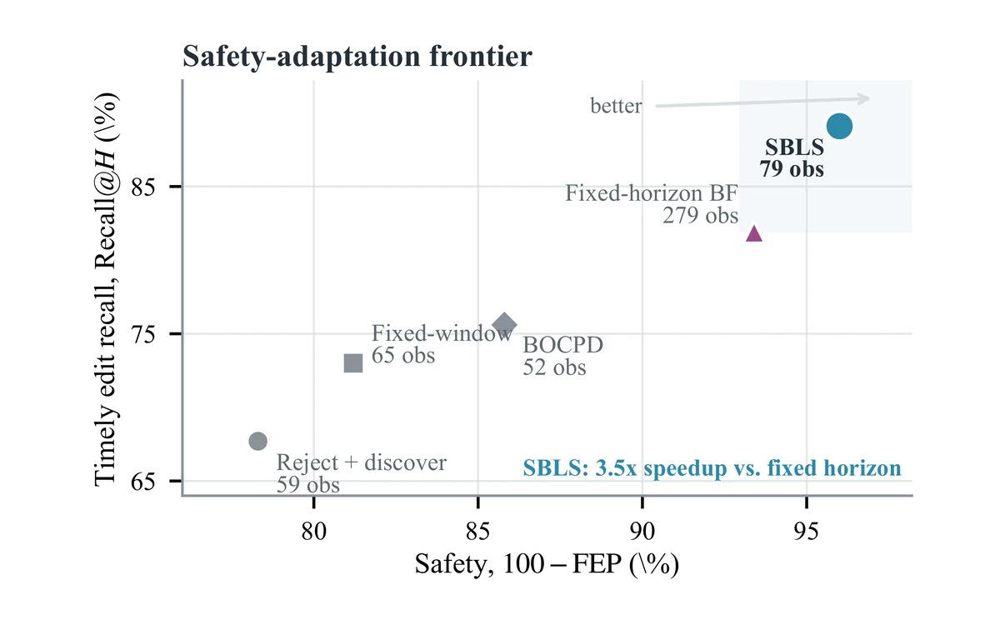

Open-World Classification as Bayesian Model Selection over Evolving Label Spaces
SBLS decides when a deployed text classifier's label set should change (stay, add or split) by sequential Bayesian model selection, testing each proposed edit only on observations that arrive later. Without target-task labels it reaches 79.0 Macro-F1 on the 12-dataset BOLT suite and 80.5 Edit-F1 at a 4.0% false-edit probability on streaming benchmarks.